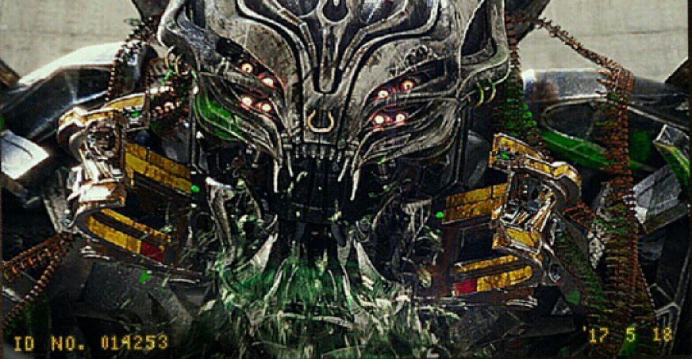
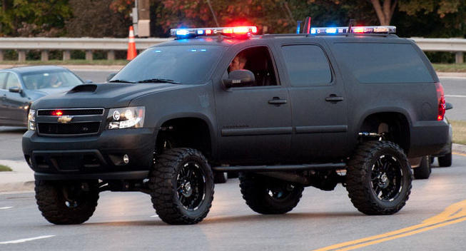

Có thể là Decepticon giết người nhiều nhất trong tất cả, Berserker là một quả cầu năng lượng hủy diệt sôi sục, ham muốn bạo lực của anh ta liên tục và không thể kìm nén. Bất cứ ai và bất cứ thứ gì cản đường anh ta đều bị xé nát, khiến đồng minh cũng như kẻ thù của anh ta phải cho anh ta một bến đỗ rộng rãi nhất có thể. Bằng một phép màu nào đó, loài người đã bắt được Berserker sau khi hắn để lại vô số thi thể sau khi bị hút khô thịt. [1] Anh ta đã liên tục đấu tranh chống lại sự kiềm chế của mình, phun ra những lời đe dọa đồ họa nhất có thể tưởng tượng được, điều này dẫn đến những sự kiềm chế mạnh mẽ hơn, khiến Berserker thậm chí còn tức giận hơn... và chu kỳ vẫn tiếp tục. Đương nhiên, Megatron muốn tên điên chống đối xã hội và bốc đồng này trở lại hàng ngũ của mình, nhưng ngay cả anh ta cũng biết đó là một mệnh lệnh cao.

Berserker nằm trong số Decepticons đang bị TRF giam giữ. Khi TRF đang đàm phán với Megatron, Megatron đã yêu cầu Berserker trở thành một trong những Decepticon được thả khỏi nơi giam giữ để trở thành một phần của "phi hành đoàn" của anh ta. Berserker thể hiện tính khí hung bạo của mình khi miếng bảo vệ miệng của anh ta được thả ra và anh ta lớn tiếng đe dọa sẽ uống máu những kẻ bắt giữ mình. TRF đã từ chối yêu cầu, cho rằng Berserker quá nguy hiểm để được thả ra và Megatron biết rõ rằng yêu cầu của anh ta là vô lý. Megatron dường như không mấy quan tâm đến việc từ chối và thay vào đó chỉ chọn Onslaught.

Là một phần của làn sóng đầu tiên của các nhân vật The Last Knight Premier Edition Deluxe Class, Berserker thay đổi từ một chiếc Chevrolet Suburban thành rô-bốt và ngược lại. Anh ta bao gồm một cặp vũ khí có gai mà anh ta có thể cầm qua trụ 5mm . Chúng có thể treo trên bảng điều khiển phía sau của anh ấy bằng các móc nhỏ trên tay cầm và cất giữ trong gầm xe ở chế độ xe của anh ấy. Bàn tay của anh ấy cũng có hai ngón tay cái ở hai bên đối diện, điều đó thật tuyệt vời.
Chế độ phương tiện kibble trên cánh tay của anh ấy không được gắn vào anh ấy và chỉ được gắn vào các khe điêu khắc trên cánh tay của anh ấy. Điều này dẫn đến khả năng giữ hơi yếu và các phần nhỏ bị rơi ra trong quá trình chuyển đổi. Ở chế độ phương tiện, một số tab dùng để giữ phần thân bên ngoài lại với nhau không khớp với nhau, dẫn đến những khoảng trống lớn. Đặc biệt, các tấm tạo thành phía sau xe có xu hướng bật ra do áp suất quá cao. Tốt nhất là bạn nên bắt đầu từ phía trước với các tấm ốp vào hông anh ấy và di chuyển về phía sau.